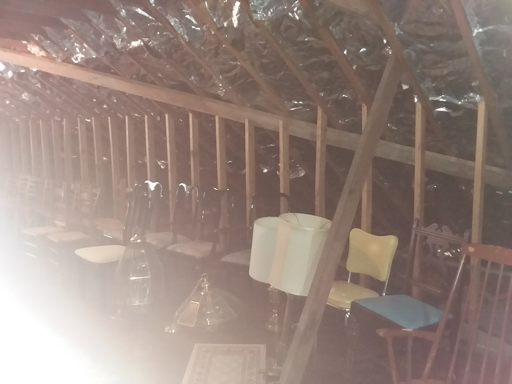

Problems
What Is in My Attic? A Sound, Timing and Droppings Guide
You do not need to see the animal to work out what it is. Sound, timing and droppings give the answer in most houses. Light pitter-patter after dark points one way, heavy thumping with chatter points another. Use the tables on this page tonight, then match the answer to the right removal page.
Request an inspectionKey points
- Match three clues: the sound, the time it happens, and the droppings left behind.
- Daytime scampering usually means grey squirrels. Night noise splits into flying squirrels, raccoons, bats or rodents by weight and pattern.
- Do not seal any hole until the species is confirmed and the animals are out.



Try the checker
Answer four questions about the sound, the timing, the droppings and the entry point, and it narrows the likely animal down and links you to the right removal page for your town.
Step one: listen for weight and pattern
Close your eyes and judge the sound like footsteps. A raccoon sounds like a small person: heavy thumps, slow deliberate movement, sometimes a dragging noise and low chattering or chirring, mostly at night. Grey squirrels scamper and scratch in bursts during the day, morning and late afternoon, and go quiet after dark. Flying squirrels are the night shift version: light, fast pitter-patter and soft thuds as they land, any time after dusk. Mice and rats make light scurrying and gnawing, often along the same fixed paths each night, with pauses at the same spots.
Bats are the quietest tenants. Expect faint fluttering, soft scratching and occasional squeaks near the roost at dusk as they leave and at dawn as they return, rather than travel noise across the attic. Birds in a chimney or vent are loud, daytime and localised to one shaft. If the sound sits in one place and includes flapping against metal, think chimney first, not attic.
- Heavy thump plus chatter at night: raccoon
- Fast scamper in morning and late afternoon: grey squirrel
- Light pitter-patter after dark: flying squirrel
- Flutter and scratch near one spot at dusk: bats
Step two: check the droppings safely
Droppings settle arguments that sounds start. Look from the hatch with a torch. Do not handle anything bare-handed, and do not sweep or vacuum dry droppings. Raccoon droppings are large, two to three inches, often in one latrine corner. Bat guano collects in a pile under the roost and looks like dark, crumbly pellets. The home test for guano: a pellet that crumbles to dust and shiny fragments when pressed with a gloved stick is insect-based guano, while mouse droppings stay hard and look like small grains of rice. Squirrel droppings are smaller, scattered and barrel-shaped. Rat droppings are larger, blunt and often along runs.
Photograph what you find from a safe distance. Size, place and pattern are the three things an operator will ask about, and a photo answers all three. If droppings cover a wide area or sit deep in insulation, stay out of the attic and let the inspection cover it. Identification needs one look, not a full tour of a contaminated space.
Step three: match the clues to the next step
With sound, timing and droppings pointing the same way, the case is usually strong enough to plan. Raccoon signs mean a check for young before any eviction, from March to June especially. Bat signs mean timing the work around the New York blackout windows. Squirrel signs mean hunting chewed wiring during the inspection. Mouse and rat signs shift the plan to small-gap exclusion and fixed-path trapping routes. Each animal page on this site takes the identification further and lays out removal, cost ranges and season notes for that species.
If clues conflict, say heavy noise but no droppings, or droppings but silence for a week, the animal may have moved on or the den may sit in a soffit or wall you cannot see into. That is the normal limit of home diagnosis, not a failure. An inspection with a camera and a roofline walk resolves what listening cannot, and it produces the entry-point list that any fix depends on.
Sound, timing and species
| Sound | When | Likely animal | Confirm with |
|---|---|---|---|
| Light pitter-patter, soft landing thuds | After dark, through the night | Flying squirrel | Small droppings in insulation, entry at roofline |
| Scampering, scratching, rolling sounds | Morning and late afternoon | Grey squirrel | Chewed entry hole, nut stores, daytime activity |
| Heavy thumps, dragging, chattering | Night, quiet by day | Raccoon | Latrine corner, torn soffit or vent |
| Fluttering, faint scratching, squeaks | Dusk and dawn, one area | Bats | Guano pile under roost, staining at a small gap |
| Light scurrying on fixed paths, gnawing | Night, repeating routes | Mice or rats | Small droppings along runs, grease marks |
| Flapping and chirping in one shaft | Daytime | Birds in chimney or vent | Nest material at the flue or vent |
Timing is the fastest filter: grey squirrels are day animals, so true 2 a.m. noise is rarely them.
Droppings identification
| Droppings | Look and place | Likely animal |
|---|---|---|
| Large, 2-3 inches, in one corner pile | Latrine on insulation or a flat board | Raccoon |
| Dark pellets in a pile under one spot | Crumble to dust when pressed, shiny flecks | Bats (guano) |
| Small, barrel-shaped, scattered | Near entry points and runs | Squirrel |
| Tiny, rice-like, hard | Along walls and stored items | Mouse |
| Larger, blunt-ended, along fixed runs | With grease marks on timber | Rat |
Gloves on, no dry sweeping, and photograph rather than collect.
Frequently asked questions about attic animal identification
What animal makes scratching noises in the attic at night?
Scratching at night is most often mice, rats or flying squirrels, and sometimes bats near a roost. Grey squirrels are day animals, so steady night scratching points elsewhere. Light, fast scratching that travels suggests flying squirrels or rodents. Scratching fixed in one spot at dusk suggests bats. The droppings check on this page settles which of the night animals you have. An inspection in one of the ten upstate towns we cover confirms the details before any work or price is agreed in writing.
How can I tell what animal is in my attic by sound alone?
Judge weight first, then timing, then pattern. Heavy, slow thumps at night sound like a small person moving and fit a raccoon. Quick scampering in daylight fits a grey squirrel. Fast, light pitter-patter after dark fits a flying squirrel. Repeating light runs along the same path fit mice or rats. Sound alone narrows it to one or two species, and droppings confirm the answer. If you are unsure, start with an inspection and written findings, then decide on the next step with clear information in hand.
What does bat poop look like?
Bat guano looks like dark brown or black pellets, similar in size to mouse droppings, piled beneath the roost rather than scattered. The test that separates it: press a pellet with a gloved stick and guano crumbles into dust with shiny specks of insect shell, while mouse droppings are hard and stay whole. Guano piles mark the roost spot and help an operator find the entry gap above it. That approach keeps the work humane, avoids sealing an animal inside, and gives you a record of exactly what was done.
I hear thumping in the attic at night. What is big enough for that?
A raccoon is the usual answer. Adult raccoons weigh enough to make floorboards carry the sound, and their movement includes thumps, dragging and sometimes chattering or chirring, especially with young in spring. Opossums occasionally den in attics and sound similar but lighter. Heavy night thumping rules out squirrels and mice. Plan for a raccoon inspection, including a check for babies before any removal is scheduled. An inspection in one of the ten upstate towns we cover confirms the details before any work or price is agreed in writing.
Why do I only hear noises at certain times of day?
Because each species keeps its own hours. Grey squirrels feed by day and sleep at night, so their noise clusters at morning and late afternoon. Raccoons, flying squirrels, mice and rats work the night. Bats leave at dusk and return at dawn, so their noise brackets the night. A simple log of the hours you hear activity for two or three days is one of the most useful things you can hand an operator. If you are unsure, start with an inspection and written findings, then decide on the next step with clear information in hand.
Will the animal in my attic leave on its own?
Sometimes a wandering animal leaves within days, but a denning mother, a bat colony and a squirrel with food stored in your insulation are settled, not passing through. Waiting also waits through the damage: more droppings, more chewing, more scent to attract the next tenant. If noise continues past a week, or returns at the same hour nightly, treat the animal as resident and book an inspection. That approach keeps the work humane, avoids sealing an animal inside, and gives you a record of exactly what was done.
How small a hole can a squirrel get through?
A grey squirrel can squeeze through a gap of about an inch and a half, and it can chew a smaller weak spot up to that size in an afternoon. Flying squirrels need less, around an inch. Mice manage a quarter inch. This is why exclusion walks the whole roofline rather than the one obvious hole: the animal only needs the smallest weak point on the structure to be back inside. An inspection in one of the ten upstate towns we cover confirms the details before any work or price is agreed in writing.
Are flying squirrels dangerous in an attic?
Flying squirrels are not aggressive and rarely bite, but a colony in the attic brings droppings, urine staining and gnawing, including on wiring. They are social animals, so one soft thud at night often means several animals gliding in through a roofline gap. Removal uses one-way doors at the entry points outside the maternity period, followed by sealing to a smaller standard than grey squirrels need. If you are unsure, start with an inspection and written findings, then decide on the next step with clear information in hand.
What are the signs an animal has already left?
Silence for several nights is the first sign, strongest if it covers the hours the animal used to be active. Cobwebs across the entry hole, undisturbed dust or flour patches at the gap, and no fresh droppings add weight. An operator can set a one-way door or a monitor at the hole to confirm before sealing. Sealing on a guess risks trapping a quiet animal, so confirmation is worth a few days. That approach keeps the work humane, avoids sealing an animal inside, and gives you a record of exactly what was done.
Do I need pest control or a wildlife operator for attic noises?
For the animals on this page, a licensed nuisance wildlife control operator is the match. The work is structural as much as animal-based: roofline inspection, humane eviction, metal exclusion and cleanup. General pest control suits insects and routine rodent baiting, and many firms say so themselves. Where mice or rats are the confirmed problem, ask any provider how they seal the entry points, because poison alone does not close a single gap. An inspection in one of the ten upstate towns we cover confirms the details before any work or price is agreed in writing.
How much does it cost to find out what is in my attic?
Finding out is the inspection, which runs $150-$300 on this site and is often credited toward the removal work that follows. The inspection names the species, maps entry points and checks for young and damage. Removal then follows the standard ranges: a single animal $300-$600, bat exclusion $800-$2,500, with cleanup quoted after the inspection has measured the contamination. If you are unsure, start with an inspection and written findings, then decide on the next step with clear information in hand.
What should I do tonight if I hear something in the attic?
Tonight, keep the attic hatch closed, keep pets out of rooms below the noise, and start a simple log: the hour, the place in the ceiling, and the kind of sound. Do not go up with a torch looking for the animal, and do not block any hole you know about. In the morning, run the droppings check from the hatch if it is safe, then book an inspection with your log and photos ready. That approach keeps the work humane, avoids sealing an animal inside, and gives you a record of exactly what was done.
Request an inspection
Tell us the town, the animal or noise involved, and when it started. An operator covering your town will explain the inspection, the likely next steps and the typical ranges before any work is booked.
Placeholder: call-tracking phone number and form endpoint are added before launch. No phone number is shown or invented in this draft.